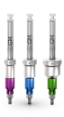
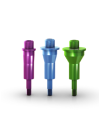
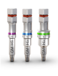
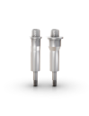
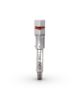

Conexão Guided Surgery GM para Contra-ângulo
:: Disponível em aço inoxidável;
:: Com código de cores segundo o diâmetro da anilha;
:: Para iniciar a instalação do implante através do guia cirúrgico
Estreita
105.139
Regular
105.140
Larga
105.141

Estabilizador de Guia Guided Surgery GM
:: Disponível em titânio;
:: Com código de cores segundo o diâmetro da anilha;
:: Para fixação adicional do guia cirúrgico
Estreito
125.130
Regular
125.131
Larga
125.132

Conexão Guided Surgery GM para Catraca
:: Disponível em aço inoxidável;
:: Com código de cores segundo o diâmetro da anilha;
:: Para finalizar a instalação do implante através do guia cirúrgico
Estreita
105.142
Regular
105.143
Larga
105.144

Estabilizador de Guia Guided Surgery - Longo
:: Disponível em titânio;
:: Para fixação adicional do guia cirúrgico;
:: Para uso quando se escolhe a altura de anilha H11
Estreito
125.133
Regular
125.134

Conexão Guided Surgery GM H11 GM para Catraca
:: Disponível em aço inoxidável;
:: Para finalizar a instalação do implante através do guia cirúrgico;
:: Para uso quando se escolhe a altura de anilha H11
105.145

Anilhas para Sistema Neodent® Guided Surgery
:: Disponível em titânio;
:: Vendidas em pacotes com 10 unidades cada
Anilha para Sistema Guided Surgery Estreita
125.135
Anilha para Sistema Guided Surgery Regular
125.136
Anilha para Sistema Guided Surgery Larga
125.137
Anilha do Fixador para Sistema Guided Surgery
125.138